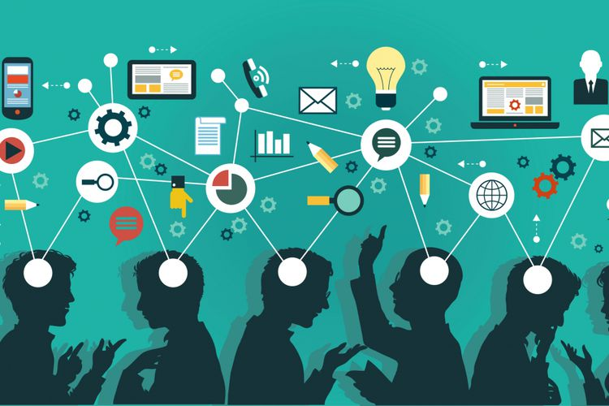

Akses Global ke Informasi dan Sumber Daya

Sebelum adanya teknologi, akses ke pendidikan formal seringkali dibatasi oleh faktor-faktor geografis, ekonomi, atau sosial. Di era digital, internet telah membuka akses ke berbagai platform pembelajaran daring seperti Coursera, Udemy, EdX, dan Khan Academy, di mana siswa dapat belajar berbagai topik dari guru di seluruh dunia. Tak hanya itu, perpustakaan digital dan jurnal ilmiah daring memungkinkan siswa dan peneliti mengakses penelitian terkini dan buku-buku referensi yang sebelumnya sulit dijangkau. Ini memperluas kesempatan belajar untuk semua orang, terlepas dari lokasi geografis atau kemampuan finansial.
Selain itu, Open Educational Resources (OER), seperti materi pembelajaran yang bebas digunakan dan dimodifikasi, semakin mendorong pendidikan terbuka. Sekolah dan institusi pendidikan dapat memanfaatkan bahan-bahan ini untuk memperkaya kurikulum mereka tanpa harus membayar biaya lisensi yang tinggi.
Pembelajaran yang Dipersonalisasi dan Adaptif

Teknologi memungkinkan pendidikan yang lebih personal dengan menggunakan algoritma cerdas untuk menyesuaikan materi pembelajaran dengan kebutuhan unik setiap siswa. Artificial Intelligence (AI) dan Machine Learning (ML) membantu menciptakan pengalaman belajar yang adaptif. Misalnya, aplikasi seperti Duolingo untuk belajar bahasa atau platform matematika seperti Khan Academy memanfaatkan AI untuk menyesuaikan materi yang diberikan berdasarkan performa dan tingkat kemajuan siswa. Ini memungkinkan siswa untuk belajar pada ritme mereka sendiri, tanpa tekanan untuk mengikuti kecepatan kelas secara seragam.
Selain itu, teknologi memungkinkan guru melacak kemajuan siswa secara lebih efektif melalui Learning Analytics. Dengan ini, guru dapat mengidentifikasi area di mana siswa mungkin mengalami kesulitan dan segera memberikan intervensi yang diperlukan.
Mendorong Kolaborasi Global
Teknologi juga mendukung kolaborasi lintas batas negara melalui telekonferensi, media sosial, dan platform pembelajaran kolaboratif. Aplikasi seperti Google Classroom, Microsoft Teams, dan Zoom memungkinkan guru dan siswa berkolaborasi dalam proyek-proyek global. Dengan demikian, siswa dapat belajar tidak hanya dari guru di negara mereka, tetapi juga dari rekan-rekan di seluruh dunia, sehingga membuka cakrawala baru dan membangun pemahaman lintas budaya.
Proyek kolaboratif internasional, seperti program pertukaran virtual, memberi siswa kesempatan untuk mengembangkan keterampilan komunikasi lintas budaya dan global, yang sangat penting di dunia yang semakin terhubung.
Tantangan dalam Mengintegrasikan Teknologi di Pendidikan
buatkan penjelasannya
Mengintegrasikan teknologi dalam pendidikan membawa banyak manfaat, tetapi juga menghadapi sejumlah tantangan yang signifikan. Salah satu tantangan utama adalah kesenjangan akses teknologi. Di banyak daerah, terutama di wilayah pedesaan atau komunitas berpenghasilan rendah, siswa seringkali tidak memiliki perangkat yang diperlukan atau akses internet yang memadai. Hal ini menghambat kemampuan mereka untuk terlibat dalam pembelajaran yang berbasis teknologi.
Selain itu, kurangnya keterampilan digital di kalangan guru dan siswa juga menjadi masalah. Meskipun teknologi telah menjadi bagian penting dalam pendidikan modern, banyak pendidik dan siswa yang mungkin tidak memiliki keterampilan yang cukup untuk menggunakannya secara efektif. Pelatihan dan pengembangan profesional yang memadai diperlukan, tetapi sering kali hal ini tidak tersedia, yang dapat menyebabkan resistensi terhadap penggunaan teknologi dalam pengajaran.
Infrastruktur yang tidak memadai juga menjadi hambatan. Sekolah yang tidak dilengkapi dengan jaringan internet yang stabil atau perangkat keras yang memadai akan kesulitan dalam menerapkan teknologi. Kurikulum yang ada juga kadang-kadang tidak dirancang untuk mengintegrasikan teknologi dengan baik, sehingga menyulitkan guru untuk memanfaatkan alat-alat digital secara maksimal.
Masa Depan Pendidikan di Era Digital

Masa depan pendidikan di era digital menjanjikan transformasi yang signifikan dan menarik, didorong oleh kemajuan teknologi dan perubahan dalam cara kita mengakses dan menyampaikan informasi. Dalam beberapa tahun ke depan, pendidikan diperkirakan akan semakin terintegrasi dengan teknologi, menghasilkan pengalaman belajar yang lebih kaya dan beragam.
Salah satu perubahan utama adalah semakin meluasnya penggunaan pembelajaran berbasis teknologi, seperti e-learning dan blended learning. Dengan platform online yang memungkinkan akses ke berbagai sumber daya, siswa dapat belajar secara fleksibel, menyesuaikan waktu dan cara belajar mereka sesuai dengan kebutuhan pribadi. Ini juga akan mendorong pendekatan pembelajaran yang lebih individual, di mana setiap siswa dapat belajar dengan kecepatan mereka sendiri dan mendapatkan dukungan yang lebih sesuai dengan kebutuhan mereka.
Kecerdasan buatan (AI) dan analisis data juga akan memainkan peran penting dalam pendidikan. AI dapat membantu dalam pengembangan sistem pembelajaran yang adaptif, yang mampu menyesuaikan konten dan metode pengajaran berdasarkan kemajuan siswa. Dengan memanfaatkan analisis data, pendidik dapat mengidentifikasi pola dalam pembelajaran siswa, memungkinkan mereka untuk mengatasi tantangan lebih awal dan mengoptimalkan strategi pengajaran.
Teknologi telah dan akan terus memainkan peran penting dalam meningkatkan kualitas pendidikan di era digital. Dari akses informasi yang lebih luas, metode pembelajaran yang inovatif, hingga fleksibilitas dalam belajar, teknologi membuka peluang baru dalam dunia pendidikan. Namun, tantangan seperti kesenjangan digital harus diatasi agar semua siswa dapat menikmati manfaat teknologi secara merata. Dengan pemanfaatan yang tepat, teknologi dapat menjadi sarana untuk menciptakan sistem pendidikan yang lebih inklusif, efektif, dan adaptif di masa depan.